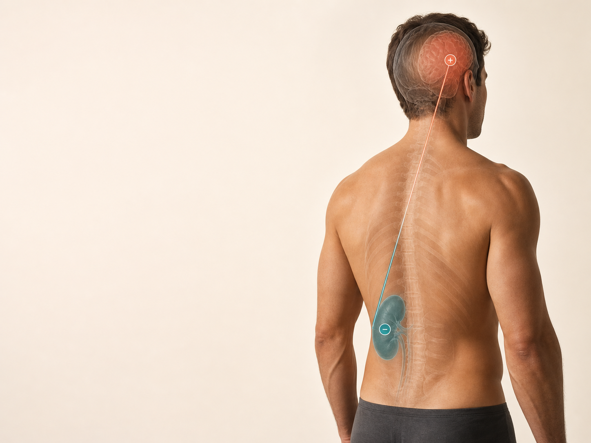
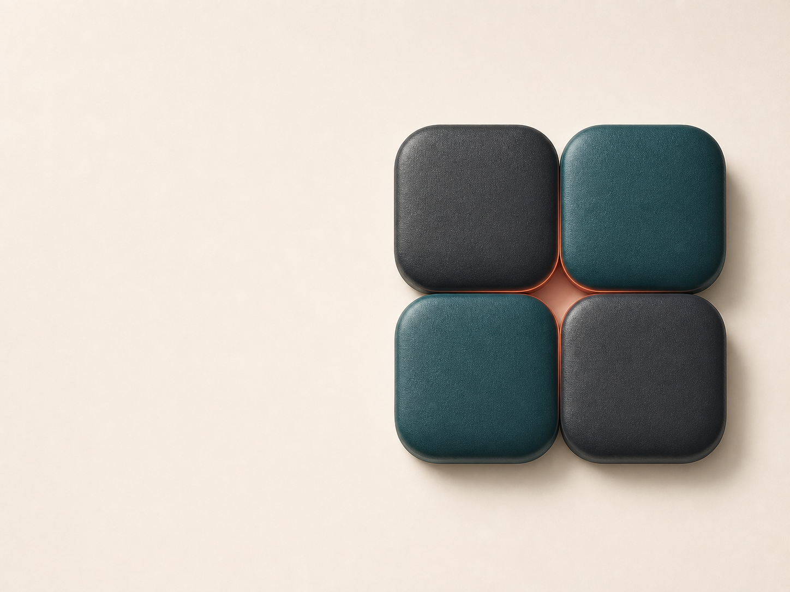

A cada hallazgo, intensidad. Es lo que hace comparable esta sesión con la siguiente.
Regulación Bioeléctrica
Forma parte del procedimiento
Preparación del paciente
La tensión de defensa muscular es una de las principales fuentes de variabilidad de la prueba.
01
Se explica
Evaluación de simetría y colocación de imanes: indolora y no invasiva.
02
Se retira
Joyas, reloj, cinturón, llaves y dispositivos electrónicos.
03
Se posiciona
Decúbito supino, cabeza neutra. Tracción suave y movilización lateral.
04
Se cubre con manta
Reduce el tono de defensa y estabiliza la medición basal.
Regulación Bioeléctrica
Procedimiento de valoración de la simetría
Valoración de la simetría
30°
Se toman por los tobillos y se elevan alineadas con el eje del cuerpo.
Talones libres, por fuera del borde distal, de preferencia con calzado.
Solo elevar y medir. Sin traccionar en ese momento y sin corregir.
Izquierda
referencia
Derecha
variable
30° · elevación suave
Regulación Bioeléctrica
Criterio de decisión en cada rama
Primera bifurcación del algoritmo
Medición basal de la simetría
Talones isométricos
Directo al rastreo por zonas.
Acortamiento funcional
Primero se establece la línea base.
Regulación Bioeléctrica
Establecimiento de la línea base
Acidosis temporal

01
Positivo sobre el riñón del lado del acortamiento
Cara positiva a la piel. Homolateral en ≈80 %; si no responde, contralateral.
02
Se vuelve a medir
La isometría confirma el riñón como nodo.
03
Negativo adyacente, sin superponer
Dipolo local. Veinte minutos o más.
04
Criterio de retirada
Se retira solo el positivo y se mide. Si persiste, se recoloca y se prolonga.
Regulación Bioeléctrica
Hallazgos en la fase de apertura
Reaparición del acortamiento
Discrepancia anatómica
Con el imán colocado la extremidad continúa acortada. Se coloca una marca en esa longitud y esa marca pasa a ser la referencia basal: el acortamiento lesional se manifestará sobre esa base.
Acidosis latente
La extremidad vuelve a acortarse tras la corrección: desregulación más sostenida. Positivo sobre zona renal, habitualmente derecha; negativo sobre el área parietal contralateral al riñón utilizado.
Veinte minutos, o se deja colocado y se continúa el rastreo en paralelo.
Regulación Bioeléctrica
Regla general de aplicación
Solo se coloca un dipolo donde el rastreo responde con acortamiento.
Una zona que no acorta, no se trabaja.
Ustedes proponen la zona
El rastreo confirma el punto
Regulación Bioeléctrica
Mecanismo de acción
El dipolo de gradiente
Dos polos opuestos y adyacentes generan un gradiente de campo empinado en el tejido intermedio.
Es ese gradiente, no la intensidad del imán, el que actúa.
Regulación Bioeléctrica
Criterio de búsqueda a distancia
El orden fijo de nodos reguladores
El negativo permanece sobre la zona. Se retira el positivo probado al lado y se busca en orden, midiendo en cada paso.
01Zona renal · D → IRegión lumbar posterior, bajo las últimas costillas, lateral a la columna.
02Suprarrenal · D → ISobre el polo superior de la zona renal.
03HígadoHipocondrio derecho, rastreando toda la zona hepática.
04Bulbo raquídeoNuca, en el hueco por debajo del occipucio.
05Cuerpo enteroSi ninguno restablece la isometría.
Regulación Bioeléctrica
Estatus de la evidencia
Uno establecido, tres en investigación
Establecido
Zona renal
Nodo regulador principal: regula el potasio, la variable que domina en la despolarización aguda.
Propuesto
Suprarrenal
Efector neuroendocrino.
Propuesto
Hígado
Efector metabólico.
Propuesto
Bulbo
Control autonómico central.
Regulación Bioeléctrica
Indicación · dolor con contractura
La rejilla 2 × 2
Sobre un punto ya confirmado: cuatro imanes en cuadro con polaridades alternadas en tablero.
Cada imán opuesto a sus vecinos de lado y de arriba. En cada frontera se enfrentan polos opuestos: una malla de gradientes.

Regulación Bioeléctrica
Criterio de cierre
No cierra el reloj. Cierra la medición.
Veinte minutos como base, veinte a treinta en el trabajo por zonas: es la ventana de impactación.
Se retira el positivo
Se mide
Si vuelve a acortar: se recoloca y se prolonga
Regulación Bioeléctrica
Consideración clínica central
El alivio no equivale a resolución
Se trabaja en serie: se vuelve a evaluar ese mismo punto en los días siguientes, hasta que deje de marcar. La frecuencia la determina la evolución, no un intervalo fijo.
No preguntes
¿Le quitó el dolor?
Pregunta
¿Cuánto le duró?
Regulación Bioeléctrica
11:05
Los tipos de dolor y sus niveles
Un repertorio de preguntas, no una lista de diagnósticos.
Regulación Bioeléctrica
Dos hallazgos frecuentes
Discordancia entre rastreo y dolor
Duele y no marca
Zona marcada en el mapa, dolor claro, y al colocar el imán no hay cambio en la medición.
Que no marque no indica ausencia de daño: el mecanismo opera en otro nivel.
Marcó, cerró y sigue doliendo
El punto se trabajó, dejó de marcar, y el paciente sigue con dolor.
Si el nivel local está resuelto y el dolor persiste, el proceso vive más arriba.
Regulación Bioeléctrica
Tres mecanismos, no tres grados de gravedad
Los tres tipos de dolor
Nociceptivo
discreta · localizada
Daño real o amenazado a tejido no neural, por activación de nociceptores.
Distribución discreta, proporcional al hallazgo, patrón mecánico. Evoluciona con el tejido.
Artrosis · esguince · contractura
Neuropático
trayecto neuroanatómico
Lesión o enfermedad del sistema somatosensorial.
Distribución neuroanatómicamente plausible, calidad quemante o eléctrica. Exige lesión demostrable.
Neuropatía diabética · radiculopatía
Nociplástico
regional · multifocal
Nocicepción alterada, sin daño tisular ni lesión somatosensorial que lo expliquen.
Término incorporado en 2017; criterios clínicos en 2021. Es el descriptor que faltaba.
Fibromialgia · SDRC · migraña crónica
Regulación Bioeléctrica
Nociplástico
Criterios diagnósticos
Entrada
Tres meses o más
Distribución regional o multifocal, no discreta
No explicado del todo por hallazgo tisular ni lesión neural
Desproporción respecto a lo que se encuentra
Hipersensibilidad evocada
Alodinia
Hiperalgesia
Post-sensación
Comorbilidades · rara vez se interrogan
Sueño no reparador, con despertares
Fatiga que no cede con el descanso
Quejas cognitivas: concentración y memoria de trabajo
Hipersensibilidad a luz, sonido y olores
No son cuatro problemas independientes: es un solo sistema con la ganancia aumentada.
Regulación Bioeléctrica
Respuesta esperada según fenotipo
El fenotipo predice la respuesta
NociceptivoMarca en la zona y cierra con dipolo local o renal. Es el terreno habitual de la técnica.
NeuropáticoPuede marcar sobre el trayecto, con respuesta menos limpia.
NociplásticoPuede no marcar donde duele. El rastreo responde con precisión a una pregunta dirigida al nivel equivocado.
Los fenotipos se mezclan: lo habitual es una lesión nociceptiva real con un componente nociplástico encima. No se busca la categoría pura, sino cuál pesa hoy.
Regulación Bioeléctrica
Criterios de derivación · signos de alarma
Contraindicaciones de la sesión
Dolor que despierta por la noche de forma persistente
Pérdida de peso no explicada, fiebre o sudoración nocturna
Déficit neurológico progresivo
Alteración de esfínteres o anestesia en silla de montar
Traumatismo con sospecha de fractura
Antecedente de cáncer con dolor nuevo
Inicio en mayores de 50 años sin causa mecánica
Signos de infección
Dolor visceral agudo
No se rastrea · no se aplican imanes · se derivaEstá dentro del método, no fuera: reconocer el borde forma parte del criterio clínico.
Regulación Bioeléctrica
Cómo el dolor cambia de nivel
Los cuatro niveles
01
El tejido
Sensibilización periférica
Los mediadores reducen el umbral del nociceptor: hiperalgesia y alodinia, con desregulación de canales.
Aquí el rastreo marca en la zona.
02
El segmento
Sensibilización central espinal
LTP vía NMDA, activación glial, pérdida de GABA y glicina, sumación temporal.
El dolor se independiza de su origen.
03
La modulación
PAG–RVM: de inhibir a facilitar
Se debilita la inhibición descendente y las células de facilitación de la RVM amplifican.
Tono simpático, poca relación con la carga.
04
La red
Reorganización cortical y límbica
El dolor se incrusta en circuitos de memoria y emoción; se alteran saliencia y red por defecto. Pérdida medible de sustancia gris, parcialmente reversible.
Dolor con aferencia periférica mínima.
Regulación Bioeléctrica
Transversales a toda la cascada
Dos moduladores transversales
Diálogo neuroinmune
Glía y células inmunes perpetúan la neuroinflamación.